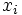
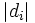
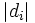
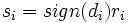
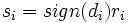
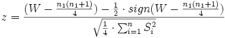
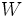
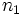
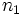

, wird die Differenz mit Vorzeichen gefunden, wobei ein gegebener Testwert für den Median der Stichprobe ist.
, wird die Differenz mit Vorzeichen gefunden, wobei ein gegebener Testwert für den Median der Stichprobe ist.
Der Wilcoxon-Vorzeichen-Rang-Test wird verwendet, um den t-Test bei einer Stichprobe zu ersetzen, wenn die Normalverteilung nicht eindeutig ist. Er macht also nicht so strenge Bedingungen erforderlich wie der t-Test bei einer Stichprobe und hat eine breitere Verwendung als der t-Test.
a) Für jedes , für , wird die Differenz mit Vorzeichen gefunden, wobei ein gegebener Testwert für den Median der Stichprobe ist.
b) Ignorieren Sie die Fälle, bei denen  . Ordnen Sie den Rest von , verwenden Sie ri als seinen Rang. Beachten Sie, dass alle verbundenen Werte von dem Durchschnitt der verbundenen Ränge zugewiesen sind. Sind beispielsweise drei? als 7 8 9 angeordnet, sind sie Verbindungen. Ihr Rang ist dann (7+8+9) /3=8,?
. Ordnen Sie den Rest von , verwenden Sie ri als seinen Rang. Beachten Sie, dass alle verbundenen Werte von dem Durchschnitt der verbundenen Ränge zugewiesen sind. Sind beispielsweise drei? als 7 8 9 angeordnet, sind sie Verbindungen. Ihr Rang ist dann (7+8+9) /3=8,?
c) Jedem Rang wird das Vorzeichen von  hinzugefügt, dem er entspricht. Es wird angenommen, dass 
hinzugefügt, dem er entspricht. Es wird angenommen, dass 
d) Die Summe der Ränge mit positiven Vorzeichen wird berechnet als
Unsere Nullhypothese ist, dass der Median der Grundgesamtheit einen spezifischen Wert hat. Wir testen die Nullhypothese gegen die beidseitige Alternativhypothese, das die Grundgesamtheit über keinen Medianwert verfügt. Das Konfidenzintervall wird in die Form eines Hypothesetests konvertiert. Der Test ist ein Wilcoxon-Rang-Test mit Vorzeichen bei einer Stichprobe und wird definiert als:
| H0 | |
|---|---|
| H1 | |
| Teststatistik |

Wobei , |
Signifikanzniveau  : : |
Der am weitesten verbreitete Wert für ist 0,05. |
| Kritischer Bereich: |
Weisen Sie die Nullhypothese zurück, dass der Median ein festgelegter Wert ist, wenn
, wobei Z~N(0,1) Für große Stichproben, in denen der Umfang der Grundgesamtheit größer als 50 ist, ist die Verteilung approximativ standardmäßig normalverteilt. |
Weitere Einzelheiten zu dem Algorithmus finden Sie unter nag_wilcoxon_test (g08agc).
 ist oben genanntes  und ist die Anzahl der nicht-Null
ist oben genanntes  und ist die Anzahl der nicht-Null